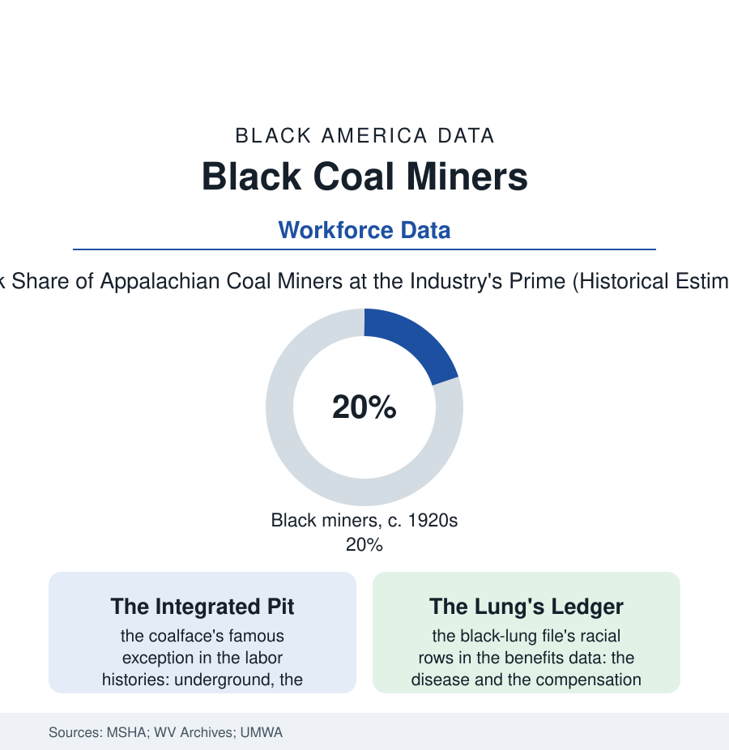

Black Employment
The Coal File: Black Miners of Appalachia
Black miners dug a fifth of Appalachia's coal in the industry's prime — recruited, segregated, unionized, and finally stranded by the same seams. The coal file.

Appalachia's coal was never dug by one people: at the industry's prime, roughly a fifth of the miners in the southern coalfields were Black — recruited from the Deep South's farms into the company towns of West Virginia, Kentucky, and Alabama, where they built the churches and lodges of a mountain Black culture the region's mythology often forgets. This article reads the coal file. Their story is the Appalachian file's missing chapter, and the employment file's oldest lesson in what an integrated workplace costs and pays.
Recruited to the Seams
The operators' labor agents made the coalfields a Great Migration destination the standard maps underdraw: the trains from Alabama and Georgia delivering miners to the company towns (McDowell County, West Virginia — the census file's Appalachian anchor — majority-Black in its mining camps' prime, its Black political power in the county data a regional marvel the histories preserve), the work underground offering the era's paradox in its purest form: brutal, lethal, and paid by the ton at rates the farm economy could not approach, with a color line that bent where the tonnage was counted. The union chapter is the labor histories' set piece and the data support its outline: the United Mine Workers organized interracially from its founding — not from innocence but from arithmetic (a divided workforce in a single-seam labor market being strikebreaking's standing invitation), the union's Black locals, officers, and organizers written through its records, the coalfields' strikes holding, at their best, a solidarity the surface towns' segregation contradicted daily — the company town itself being the era in miniature (the housing sorted by the operator's map, the scrip and the store, the church rows of both peoples on their separate streets, and the shared knowledge, renewed every shift, of whose roof timbers held). The mechanization and the busts then wrote the file's long second half: the postwar machines thinning the workforce from its hundreds of thousands, the Black miners' seniority and the camps' geography deciding whose names survived the cuts — the population data of the coalfield counties recording the Black exodus as the seams automated, the McDowells of the region emptying toward the same northern cities the first trains had bypassed.
The Dust and the Remainder
The health ledger is the health section's underground chapter: black lung — progressive massive fibrosis in the federal surveillance's current and alarming data (the disease's resurgence among the younger miners of the thin-seam era, its Black miners carrying the exposure of the longest-tenured and least-ventilated assignments in the historical assignments' pattern the NIOSH studies trace), the benefits system's gauntlet in the claims data (the federal black-lung program's denial architecture a byword in the benefits literature — the miners' widows' decades of appeals in the case files, the legal-aid clinics of the coalfields running a specialized practice against the operators' medical defenses), and the disasters' rolls in the safety record, where the Monongahs and Farmingtons list the mountain workforce's true census, name by name, in both its peoples. What remains in the coalfields today is the file's coda: a remnant industry, a Black population in the old camps thinned to the elders and the returning — the Appalachia census article's small, stubborn numbers — the churches holding reunions in towns the operators abandoned, the UMWA's pension and health funds' retirees (the Black retired miners of the benefits rolls drawing, in their thousands, on the union's century-old bargain), and the historical recovery proceeding in the state archives' digitized camp records: the scrip, the store ledgers, the company photographs in which the mountain workforce stands, at last, in its actual composition. The seam made a people the region's story forgot it had. The records, as usual, remembered.
Reading the Coal Data
The coal file is the employment section's deepest shaft: a workforce recruited across a color line by an industry that needed every back, unionized across it by arithmetic, and dispersed by the machines with the line quietly restored in the leaving order. The MSHA rolls and the union's records count them. The mountains keep the rest — in the cemeteries above the old camps, where the headstones make no distinction the payroll office would recognize.
More in Black Employment
The Black Unemployment Rate: The Two-to-One Pattern
Black unemployment runs at roughly twice the White rate — 5.5 percent against 3.3 percent in annual averages — a ratio stable across five decades of federal data. How it is measured and why it persists.
Black Median Weekly Earnings: The 80-Cent Ratio
Black full-time workers earn a median of about $900 a week — roughly 80 cents for every dollar White workers earn. The BLS earnings data by group, gender, and occupation.
Black Labor Force Participation: Working at National Rates
Black labor force participation runs at roughly the national rate — and Black women participate at higher rates than White women. The BLS participation data.
Source: U.S. Bureau of Labor Statistics; Mine Safety and Health Administration; West Virginia state archives; United Mine Workers historical records.